Reference
Operations
Every LayerImage operation on a single photo, with the input on the
left and the result of the snippet on the right. The darken-group blend modes run
on a grayscale copy (grayscale_image = image.clone().grayscale()),
as in the original demo. See Examples for complete
looks built from these operations.
Basic adjustments
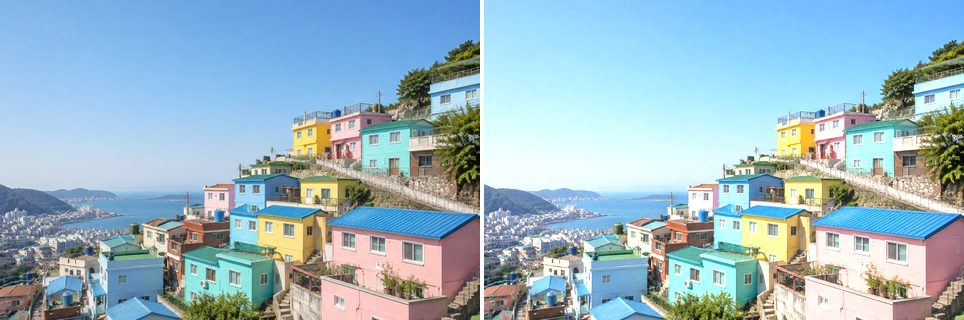
Contrast
Expand or compress the range around mid-gray: a factor above 1 increases contrast, between 0 and 1 decreases it.
image.contrast(1.5)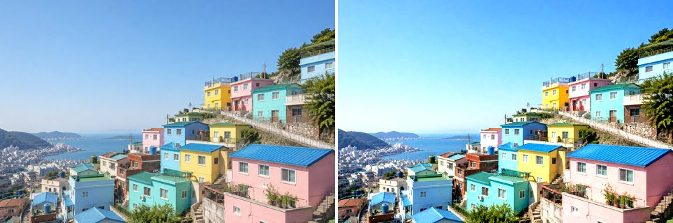
Hue
Set every pixel's hue to the target value in [0, 1] while keeping saturation and value. This is a colorize-style adjustment.
image.hue(0.3)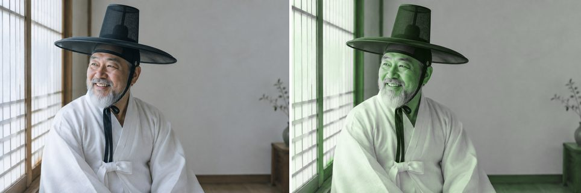
Saturation
Scale color intensity: a factor above 0 boosts saturation, below 0 mutes it (-1 fully desaturates).
image.saturation(-0.5)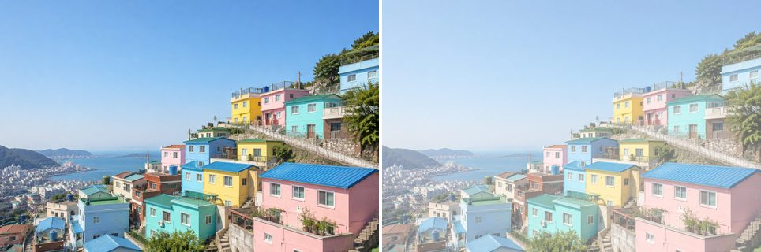
Curve (all channels)
Remap tones through control points spaced evenly across [0, 1]. Here, an S-curve deepens shadows and lifts highlights.
image.curve('rgb', [0, 0.1, 0.4, 0.65, 0.9, 1])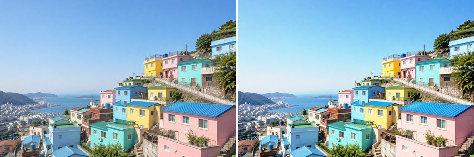
Curve (single channel)
The same curve machinery applied to the red channel only.
image.curve('r', [0, 0.2, 0.8, 1])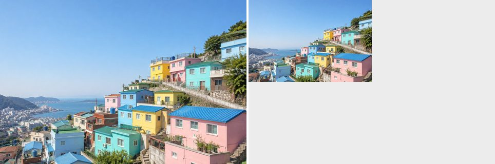
Blend modes: darken
Darken
Looks at the color information in each channel and selects the base or blend color, whichever is darker, as the result color.
grayscale_image.darken('#3fe28f')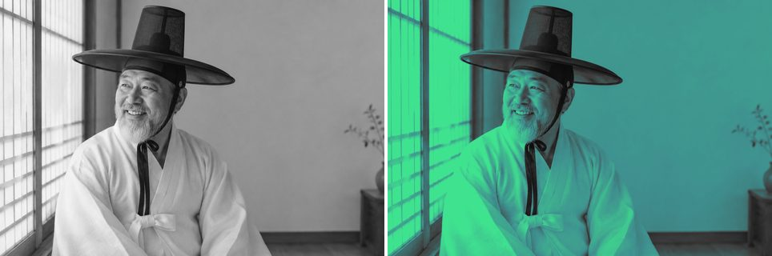
Multiply
Multiplies the base color by the blend color. The result is always darker; multiplying with white leaves the color unchanged.
grayscale_image.multiply('#3fe28f')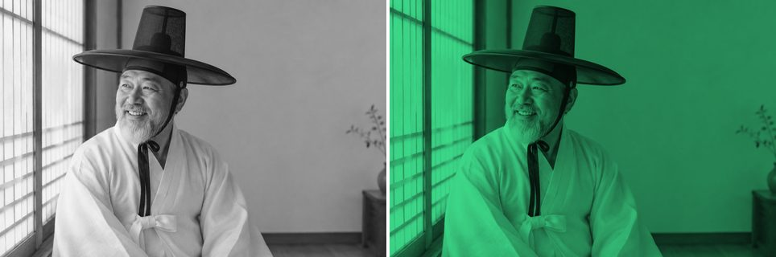
Color Burn
Darkens the base color to reflect the blend color by increasing the contrast between the two. Blending with white produces no change.
grayscale_image.color_burn('#7fe3f8')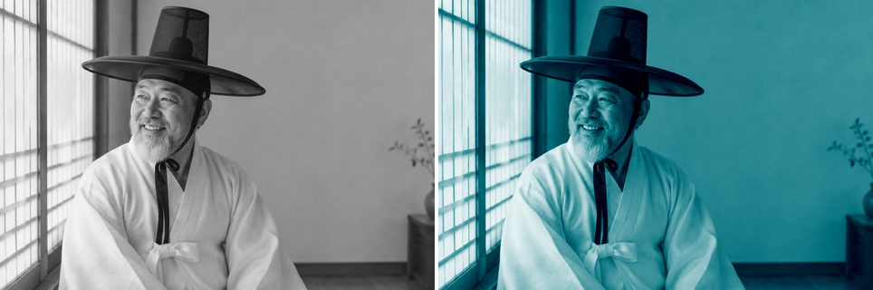
Linear Burn
Darkens the base color to reflect the blend color by decreasing the brightness. Blending with white produces no change.
grayscale_image.linear_burn('#e1a8ff')Blend modes: lighten
Lighten
Selects the base or blend color, whichever is lighter, as the result color.
image.lighten('#ff3ce1')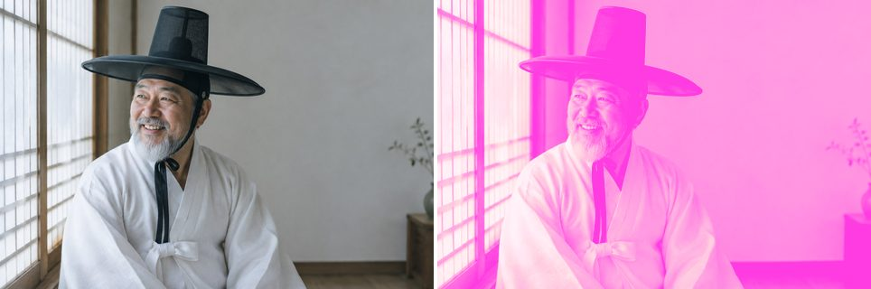
Screen
Multiplies the inverse of the blend and base colors. The result is always lighter, like projecting multiple slides on top of each other.
image.screen('#e633ba')Color Dodge
Brightens the base color to reflect the blend color by decreasing contrast between the two. Blending with black produces no change.
image.color_dodge('#490cc7')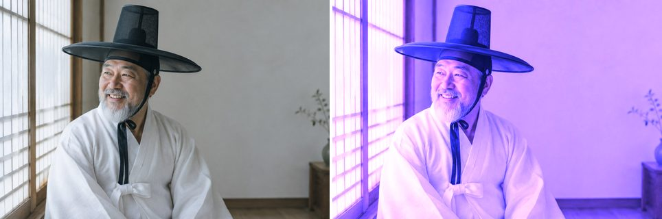
Linear Dodge
Brightens the base color to reflect the blend color by increasing the brightness. Blending with black produces no change.
image.linear_dodge('#490cc7')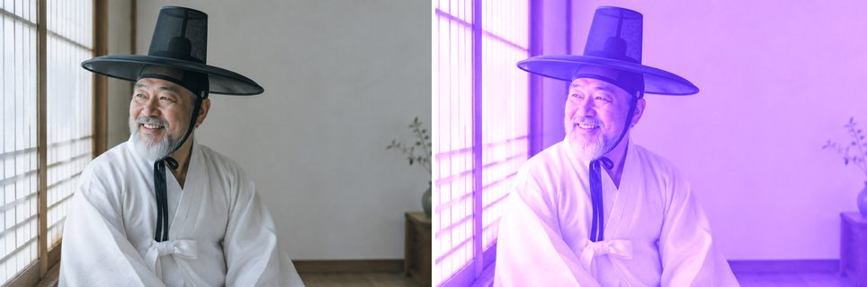
Blend modes: contrast
Overlay
Multiplies or screens the colors depending on the base color, preserving its highlights and shadows.
image.overlay('#ffb956')Soft Light
Darkens or lightens depending on the blend color, like shining a diffused spotlight on the image.
image.soft_light('#ff3cbc')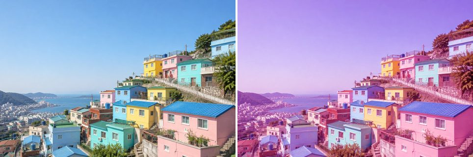
Hard Light
Multiplies or screens depending on the blend color, like shining a harsh spotlight on the image.
image.hard_light('#df5dff')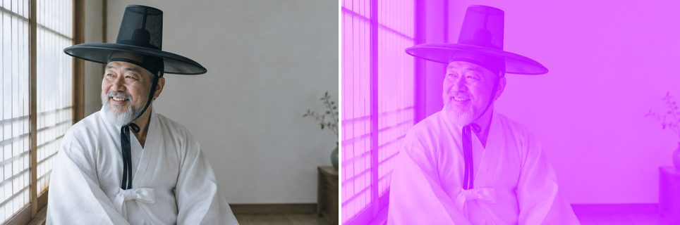
Vivid Light
Burns or dodges by increasing or decreasing the contrast, depending on the blend color.
image.vivid_light('#ac5b7f')Linear Light
Burns or dodges by decreasing or increasing the brightness, depending on the blend color.
image.linear_light('#9fa500')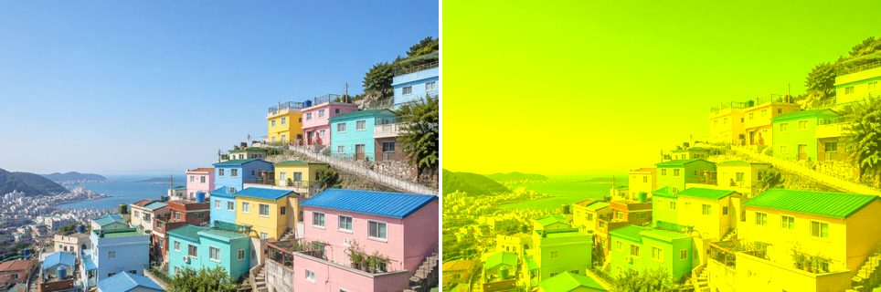
Pin Light
Replaces colors depending on the blend color, which is useful for adding special effects to an image.
image.pin_light('#005546')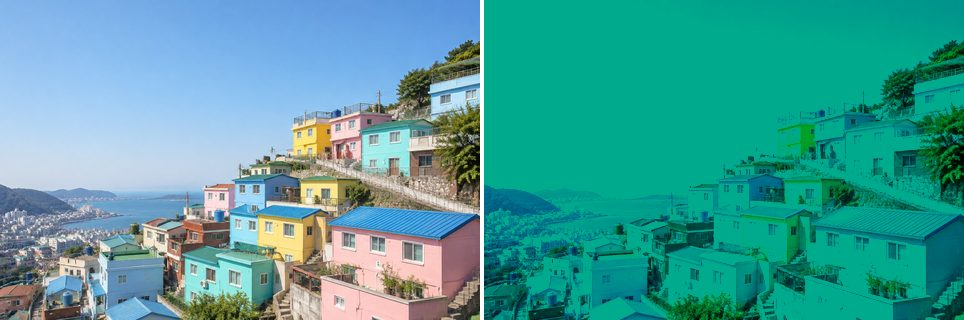
Putting it together
Method chaining
Every operation returns the LayerImage itself, so a whole look can be built as one chained pipeline.
(image.grayscale()
.brightness(0.1)
.multiply('#3fe28f', opacity=0.7)
.curve('rgb', [0, 0.1, 0.4, 0.65, 0.9, 1]))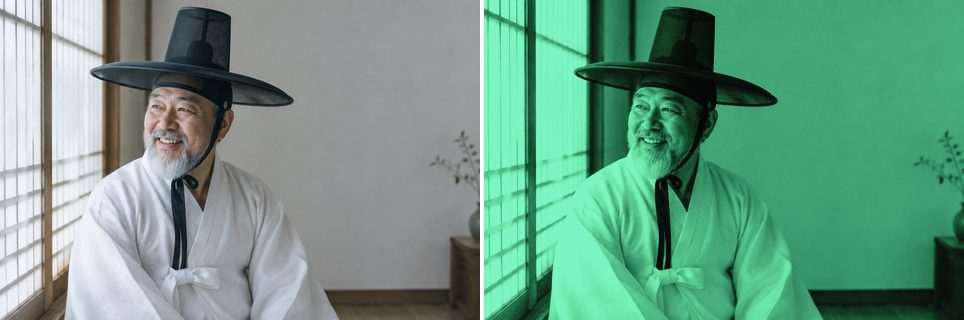